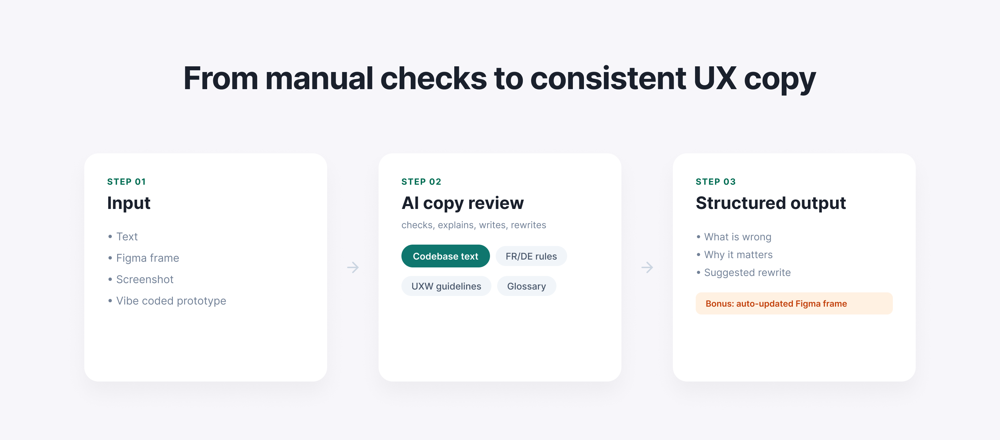
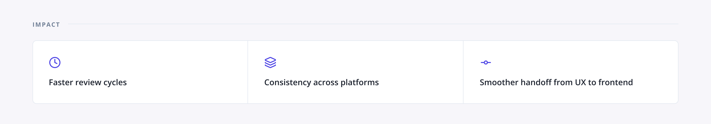

This skill is not available for public use. It was built for a work context and relies on internal company documents and guidelines.
The biggest improvement in our copy workflow came from one simple change: checking new design copy against live codebase strings before review.
This reduced inconsistencies, cut back-and-forth, and shortened review time.
We already used AI to support copy work, but it missed one key source of truth: live product copy in code. As a result, we often created new variants of strings that already existed in production, and frontend had to catch these mismatches later.
I built an internal AI skill. It reviews, writes, and translates copy, but always checks against live and trusted sources first.
It uses:
The workflow accepts different inputs: text, screenshot, Figma frame, or prototype content.It compares proposed copy with existing codebase strings first, then checks tone, glossary, and language rules.
This is what it returns:
Bonus: using Figma MCP, if you share a Figma frame, the skill can duplicate it, update the copy, and generate a new ready-to-review design automatically. This saves a lot of time.
The main value was consistency. The skill checks suggestions against real copy already used in production and explains the reason behind each recommendation. That made the output easier to trust and easier to use across the team.

But this workflow removes repetitive checks and helps the team scale copy quality more reliably.

{kind=link}
{kind=link}